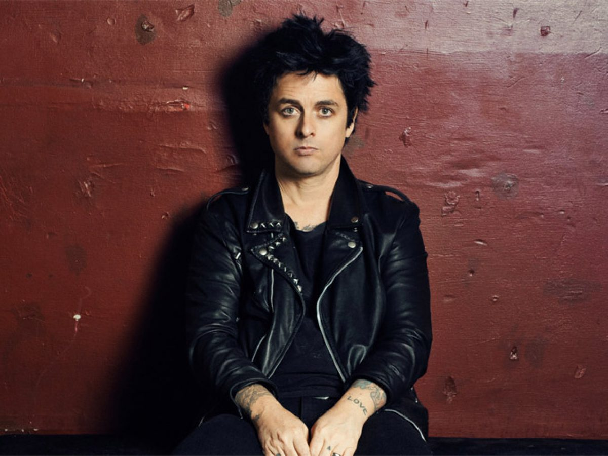
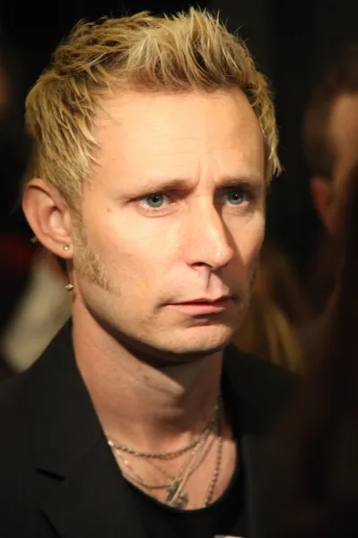

Członkowie zespołu
Billie Joe Armstrong - muzyk, kompozytor, wokalista i autor tekstów. Od 5 roku życia śpiewał okazjonalnie w szpitalach dla dzieci oraz w domach spokojnej starości. Nagrał wtedy też swój swój debiutancki singiel "Looking for love". W 1987 roku założył zespół "Green Day" wraz z basistą Mikiem Dirntem oraz perkusistą Johnem Kiffmeyerem. Od 1994 roku jest mężem Adrienne Nesser.
Mike Dirnt - właściwie Michael Ryan Pritchard. Już w wieku 15 lat usamodzielnił się i wynajmował pokój u matki Billiego Joe Armstronga, a także zatrudnił się w miejscu gdzie ona pracowała. W zespole gra na basie i pisze teksty.
Tre Cool - właściwie Frank Edwin Wright III. Urodził się w Niemczech, ale wychował w USA. Od 15 roku życia grał na perkusji w zespole The Lookouts i występował na popularnej scenie Gilman Street w Berkley. Kiedy perkusista John Kiffmeyer w 1991 roku opuścił zespół Green Day, Tre zajął jego miejsce.
Kariera
Największą popularność przyniósł zespołowi album "Dookie" w 1994 roku, który sprzedał się w 15 milionach egzemplarzy. Już pierwszy singiel z płyty "Longview" uzyskał 1. miesjce na liście Billboard Modern Rock Tracks.
Następnym hitem (14 milionów sprzedanych egzemplarzy) okazał się album "American Idiot" wydany w 2004 roku i nazywany przez krytyków punk-operą. Na tym albumie Billie Joe krytukuje rządy Georga Busha, a sama płyta powstała przez przypadek ponieważ materiał do innego albumu został skradziony.
W sumie zespół wydał 13 albumów studyjnych, a w kwietniu 2015 roku został wprowadzony do Rock and Roll Hall of Fame (muzeum rock and rolla i rocka oraz hall of fame honorująca artystów rockowych i inne osoby, które wniosły zasadniczy wkład w rozwój tych gatunków muzyki).
Moje ulubione utwory
| Wykonawca | Album | Utwór |
|---|---|---|
| Green Day | Kerplunk! | Welcome to paradise |
| Dookie | She | |
| American Idiot | Jesus of suburbia | |
| Give me novocaine | ||
| ¡Uno! | Oh Love |